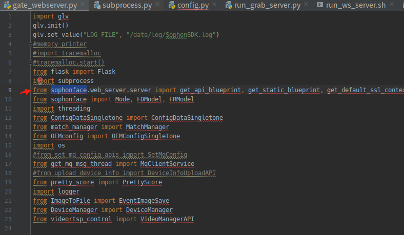
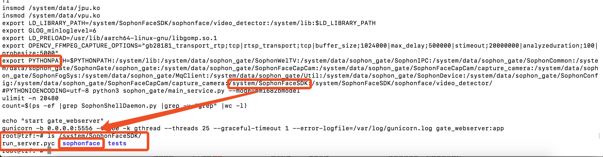

5.3. 多媒体客户常见问题（补充）¶
注意
本篇FAQ内容是 《 多媒体客户常见问题手册 》的内容补充
5.3.1. cv::Mat如何转换为bm_image？¶
答：
如果你使用BM-OpenCV创建cv::Mat ，想把它变成bm_image，那么你需要创建一个具备设备内存的Mat，也就是使用含有dev_id的参数的构造函数（也就是创建1个我们改造过的Mat），这样你才能把这个Mat通过toBMI转换为bm_image，并且这个转换过程不会发生数据拷贝，bm_image只会引用Mat的设备内存;
如果你使用data指针构造没有设备内存的原始cv::Mat，这个cv::Mat不能调用toBMI转换为bm_image，如果你确实有一个原始OpenCV的cv::Mat，要转换为bm_image，那么你应当：创建一个有设备内存的Mat，然后使用Mat.copyTo将openCV的cv::Mat的系统内存拷贝到有设备内存的Mat的系统内存空间，然后使用cv::bmcv::uploadMat将有设备内存的Mat的系统内存同步到其设备内存，然后再调用toBMI将其转换为bm_image。
5.3.2. 如何将host上的bgr planar cv::Mat变成host上的BGR packed cv::Mat？¶
答：首先，cv::Mat 支持的都是packed的数据，你的BGR plannar的数据，怎么会生成cv::Mat，如果你真有一组BGR plannar的数据，那你不应该将它直接赋值给cv::Mat，这样容易引起混乱，需要自己时刻谨记这个cv::Mat里的数据不是packed。OpenCV的标准用法，当你想从BGR packed得到planar，应当使用cv::split 分成3个cv::Mat；当你想从BGR planar到packed，那你应当有3个通道的cv::Mat，然后使用cv::Merge合成1个cv::Mat。 但是如果你觉得openCV实现的split和merge不够高效，那么可以考虑使用libyuv中基于ARM NEON指令做过优化的SplitRGB和MergeRGB。
5.3.3. 使用NV12原始数据，创建bm_image的注意事项？¶
答：NV12 有2个plane，stride应为二维数据，调用bm_image_create() 或者 不指定stride，内部自己计算；或者指定stride。指定stride时，必须指定完整的stride，注意NV12 的stride应为二维数组，并指定2个plane的stride。由于nv12 是2个plane，因此，如果要使用bm_malloc_device_byte和bm_image_attach的话，需要分别调用2次bm_malloc_device_byte分别为每个plane申请设备内存，这样会得到2个bm_device_mem_t，把他们写成1个数组，然后再用这个数组来调用bm_image_attach。 因此，建议使用bm_image_alloc_dev_mem来申请内存，而不是bm_malloc_device_byte。
5.3.4. 是否可以提供OpenCV contrib库？¶
答：OpenCV contrib库中包含一些有专利的算法、以及尚不稳定的新算法等，我们正式发布的SDK只有常用的那部分，contrib部分如有需要只能单独提供。
可在外发FTP下载：
5.3.5. BMCV相关接口，输入和输出可以使同一个bm_image吗？¶
答：不可以。bmcv_image_resize, bmcv_image_convert_to, bmcv_image_vpp_convert 等这些接口，input和output的bm_image应当是不同的内存地址对象，不支持in-place操作。
5.3.6. cv::bmcv::resize 看代码底层调用的是bmcv_image_resize，cv::resize用的是cpu吗，处理的是mat中cpu内存中的那部分数据吗？还有1个cv::hal::resize, bmcv::hwResize，这些是什么关系啊。cv::bmcv::resize和cv::resize 是否支持输入和输出是同一个对象，原地进行转换呢？¶
答：
5.3.7. 关于BM-OpenCV中GB28181接口，说的是接国标流是吧？本身支持转国标流功能吗？¶
答：不支持，目前BM-OpenCV和BM-OpenCV支持GB28181国标流的解析，具体使用方案请查看《 多媒体用户开发手册 》。
5.3.8. 如何进行编解码性能测试？是否有参考程序？¶
答：请参考SDK目录下examples/multimedia/ocv_vidmulti目录。可以进行编解码性能测试。如果是SoC模式，vidmulti程序已经编译好放置在/system/bin/下；
5.3.9. BM1684X芯片的编解码性能数据是怎样的？¶
答：BM1684X有4个VPU硬核和4个JPU硬核，具体视频和图片的编解码的速度与实际情况有关，要以实测为准。
视频解码的速度与输入视频码流的格式有很大关系，不同复杂度的码流的解码速度有比较大的波动，比如码率、GOP结构，分辨率等，都会影响到具体的测试结果。一般来说，针对视频监控应用场景，BM1684X产品单芯片可以支持到32路HD高清实时解码。码率和GOP结构对解码速度的影响因具体情况而异，需要实测；分辨率对于解码帧率的影响，可以按照比例来换算。
视频编码的速度与编码的配置参数有很大关系，不同的编码配置下，即使相同的视频内容，编码速度也不是完全相同的。一般来说，BM1684X产品单芯片最高可以支持到2路HD高清实时编码。
视频解码 |
H.264/H.265:1080P @960fps |
视频解码格式 |
CIF / D1 / 720P / 1080P / 4K(3840×2160) / 8K(8192×4096) / 8192x8192 |
视频编码 |
|
视频编码格式 |
CIF / D1 / 720P / 1080P / 4K(3840×2160) |
图片编解码 |
|
图片编解码分辨率 |
最大分辨率32768 x 32768 |
视频解码 |
H.264/H.265:1080P @960fps |
视频解码格式 |
CIF / D1 / 720P / 1080P / 4K(3840×2160) / 8K(8192×4096) / 8192x8192 |
视频编码 |
|
视频编码格式 |
CIF / D1 / 720P / 1080P / 4K(3840×2160) |
图片编解码 |
|
图片编解码分辨率 |
最大分辨率32768 x 32768 |
5.3.10. BM1684X编解码性能是同时支持32路解码和2路编码吗？内存大小和内存带宽会不会成为瓶颈？¶
答：编解码是不同的硬件单元, 可以同时支持。按照目前的内存布局，32+2应该就在内存带宽的临界位置。
在 SoC 模式下，视频内存的默认配置是 2G（另外的给VPP使用），正常使用的话支持 16 路是绰绰有余的，但要支持 32 路视频解码时需要在应用层面上仔细设计，不能有任何的浪费。
5.3.11. 解码会占用多少内存？使用vpp进行图像处理，最大可能会消耗多少内存？¶
答：解码过程的内存占用与码流格式、压缩率、码率有关，需以实测为准。
vpp模块本身是没有内存积累的，内存就是一张输入图像和一张输出图像空间。
5.3.12. 前处理时图片数据格式转换需要HWC转CHW和NCHW， 1684X是否相关接口可以使用？¶
答：BMCV中提供了针对图像的处理接口，可以实现图像数据的NHWC 与NCHW以及通道顺序的转换，也就是packed和planar、BGR和RGB的转换，但没有针对tensor的通用的NHWC和NCHW的转换。但应该可以满足模型前处理时ide图片数据格式转换需求。请查看：bmcv_image_storage_convert，bmcv_image_vpp_basic，bmcv_image_vpp_convert，bmcv_image_vpp_convert_padding、bmcv_image_convert_to等接口。
5.3.13. 硬编的画面输出是绿屏¶
答：h264_bm/265_bm硬编后，画面是绿屏。本质是编码前的原始数据没加载到。要考虑原始数据在设备内存，还是系统内存中。一般如果原始数据在主机内存的要设置is_dma_buffer=0；反之，在设备内存时，设置is_dma_buffer=1。此参数默认为1。
5.3.14. 解码器卡住¶
答：如果解码器正常运行一段时间后，卡住了，可能是由于当前程序里的解码帧数量达到了限制。这个值可以通过extra_frame_buffer_num设置，默认为5。所以在处理完AVFrame后，需要及时释放，防止占用过多解码帧。
5.3.15. 使用bmcv_image_vpp_resize_padding时报错提示”vpp input image param err”？¶
答：bmcv库中带有vpp前缀的接口与是使用硬件VPP实现的，会对输入输出图像格式有一定的要求，比如缩放比例不能超过32倍等。具体请查看《BMCV用户手册》。
5.3.16. bmcv库中是否有和OpenCV相对应的 cvtColor、 subtract、 bitwise_and、 findContours 等这几个方法？¶
答：cvtColor请参见bmcv_image_storage_convert，substract请参见bmcv_image_absdiff和bmcv_image_add_weighted，bitwise_and和findContours无BMCV实现。
5.3.17. SoC模式使用cv::Mat的数据地址初始化另外一个cv::Mat时有可能会出现乱码？¶
答：SoC模式使用cv::Mat的数据地址初始化另外一个cv::Mat 时需要指定_step，即
cv::Mat image_temp_1(image_ost.rows,image_ost.cols,CV_8UC3,image_ost.data,image_ost.step[0]);
5.3.18. SoC模式对cv::Mat的内存进行操作¶
答：SoC模式下面，cv::Mat的内存需要64字节对齐，所以cv::Mat的内存长度不是width*3*height，而是step*height，如果原始图像满足64字节对齐，那么step=width*3
5.3.19. Sophon gate 人脸应用中gate_webserver.py 的 sophonface 是如何导入的？¶
答：sophonface通过PYTHONPATH路径的方式直接指定，run_gateway.sh中，在PYTHONPATH中添加了/system/SophonFaceSDK。
5.3.20. OpenCV的imread接口读取进来的JPG图片尺寸问题¶
答：
软解JPG保持原尺寸。硬解JPG的话，会使用到JPU，虽然JPU默认最大尺寸是32768*32768，但VPP最大支持尺寸是4096*4096。 这里为满足后续VPP宽高同时小于4K的要求，会自动将图片宽高缩小到4K以下。 例如，当前w*h=5000*3000，则会同时将宽高除以2，得到2500*1500，此时宽高均满足小于4K，则停止resize。否则会继续宽高除以2的操作，最多会进行3次下采样(32768 / 8 = 4096)。
5.3.21. 如何将bm_image转为cv.Mat?¶
答：
Python中cv.Mat就是一个numpy.array，请参考以下代码：
from sophon.sail import sail import numpy as np # engine = sail.Engine(model_path, device_id, io_mode) # handle = engine.get_handle() bm_image = sail.BMImage() # 如果bm_image的format是FORMAT_BGR_PACKED或FORMAT_RGB_PACKED, # 需要先转换成FORMAT_BGR_PLANAR或FORMAT_RGB_PLANAR， # 再送入bm_image_to_tensor转Tensor，如 # image_bgr_planar = sail.BMImage(handle, bm_image.height(), bm_image.width(), sail.Format.FORMAT_BGR_PLANAR, bm_image.dtype()) # sail.Bmcv(handle).convert_format(bm_image, image_bgr_planar) # 转换到FORMAT_BGR_PLANAR，再将image_bgr_planar通过bm_image_to_tensor转换成Tensor result_tensor = sail.Bmcv(handle).bm_image_to_tensor(bm_image) # 传入handle，初始化sail.Bmcv result_numpy = result_tensor.asnumpy() np_array_temp = result_numpy[0] np_array_t = np.transpose(np_array_temp, [1, 2, 0]) mat_array = np.array(np_array_t, dtype=np.uint8)
C++中使用cv::bmcv::toMat()接口。
5.3.22. rtsp流使用ffmpeg和opencv可以正常解码，但是使用sail.Decoder无法正常解码¶
答：定位问题的原因是extra_frame_buffer_num给的太大。分别分析几个矛盾的现象如下： #. ffmpeg下能够正常执行，而python sail下不能执行：这是因为ffmpeg下默认extra_frame_buffer_num为5 #. 录下码流后，离线文件python sail可以工作，rtsp下python sail不能工作：这是因为python sail只在rtsp下设置extram_buffer_num为20个
解码器内部每个instance最多允许32个 frame buffer，因为这个摄像头码流要求的缓存frame buffer比较多，加上20个extra frame buffer后，超过了32个，所以导致register frame buffer失败。
目前在opencv中配置extra_frame_buffer_num为3， ffmpeg默认为5，这个配置基本不影响到速度，如果需要直接用解码器解出来的frame buffer做缓存，可以试着配置为10，20这个数字太大了。
sail在2.7.0(20220412_224617)及以后的版本将extram_buffer_num设置为5，并且添加其它了其它设置，保持和opencv一致